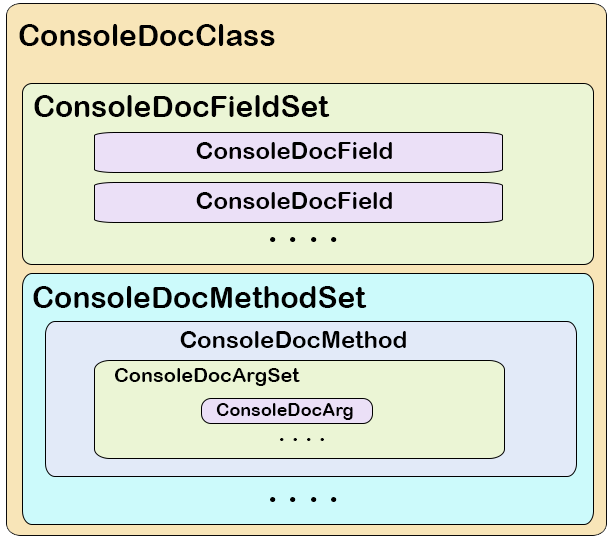

Console Documentation Classes
Overview
The primary objective is to represent the information generated through the consoleDoc.cpp output functions in an accessible (portable) internal structure. The objects provide flexible access to field and method definitions along with associated usage/documentation. They provide a templated output mechanism that can generate arbitrary documentation based on an object class structure (e.g. JSON data, TorqueScript function prototype, etc.).
Originally the project was conceived to ba a more flexible approach generating structured data for export to third-party tools. After some discussions, the feature set expanded to fully expose the structured data classes to script for general use in-game (primarily in the context of editors).
The project creates two families of C++ objects: the TSDoc[Type] family, and the SysDoc[Type]Doc family. The latter exposes TSDoc[..] objects to the console.
Engine Objects
The TSDoc[.] objects are envisioned to be application agnostic for use in both Torque and third-party applications that consume Torque object definitions (code editors, etc). As a transport mechanism, TSDoc[.] objects work within Torque to export console class definition data in JSON which third-party applications can inflate into local TSDoc[.] objects with detailed Torquescript definitions. As a TorqueScript utility, TSDoc[.] objects are exposed via the SysDoc[.] object interface for use/extension through in-game scripting.
div>
Structured data is focused around a top-level TSDocClass container object. This class holds structures to access field and method definitions along with assoicated inline documentation.
